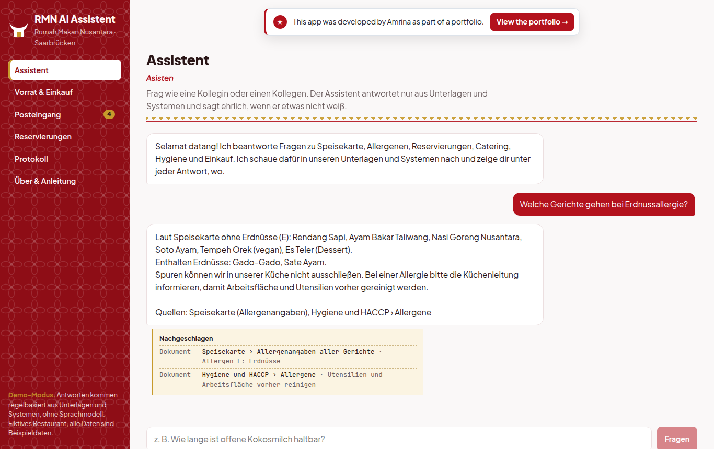
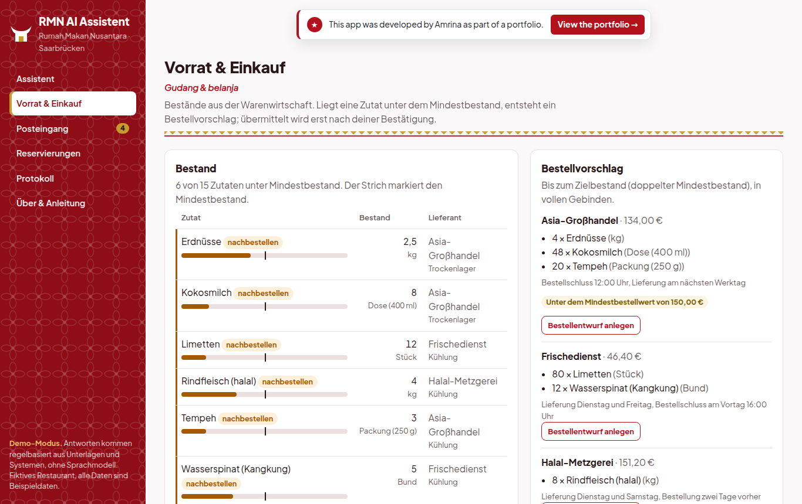
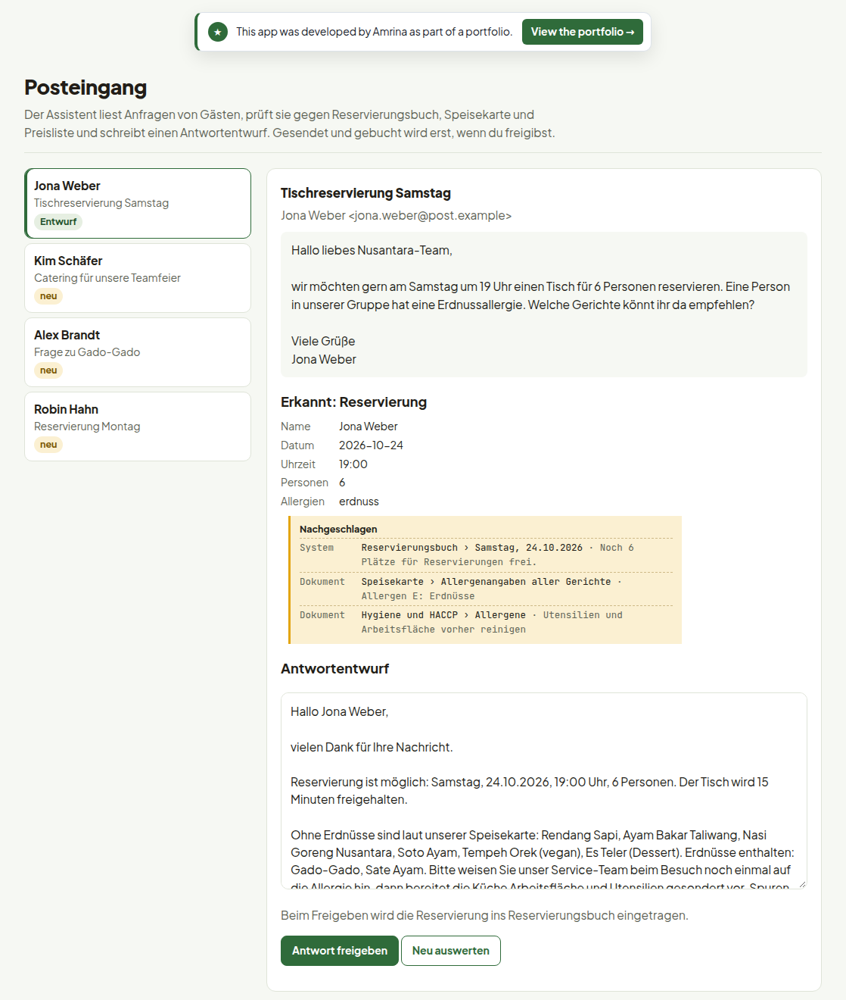

Selamat datang di Rumah Makan Nusantara.
The staff of Rumah Makan Nusantara, an Indonesian restaurant in Saarbrücken (personal project), ask it about allergens, stock or free tables. It answers only from the restaurant's documents and systems, prepares supplier orders and guest replies, and leaves every decision to a person.
The app is in German, like the restaurant's team. The free demo may take about a minute to wake up.
Four everyday jobs in a restaurant, each with the AI doing the legwork and a person deciding.
Questions about dishes, allergens, opening hours, catering or hygiene rules are answered from the restaurant's own documents (retrieval-augmented generation). Under every answer, a receipt lists the sections and system records it used. If nothing matches, the assistant says it does not know.

Stock comes from the inventory system through a REST API. Below the minimum, the app proposes an order per supplier in full packs, warns about minimum order values and asks management to approve orders over 500 €.

The assistant reads a reservation or catering request, checks opening hours, free seats, allergens and prices, and writes a reply. The reservation is only booked when a person approves the draft.

About five minutes, no account needed.
| Part | Choice |
|---|---|
| Knowledge | Restaurant documents in Markdown, split by section, BM25 retrieval with a score threshold; allergen answers read directly from the menu's allergen codes |
| Tools | Six read-only tools (documents, stock, low stock, order proposal, availability, reservations) with JSON schemas; the model cannot call anything else |
| Business rules | Computed in code: order quantities, approval limit, opening hours, seat capacity, catering prices and lead times |
| Model | Any OpenAI-compatible endpoint: OpenAI, or a self-hosted model (Ollama, vLLM) so data stays on your own server; a rule-based demo mode needs no model |
| Backend | Python, FastAPI, SQLite, audit log, rate limits for public demos |
| Frontend | React with TypeScript |
| Quality | 16 automated tests, including a fake model that exercises the tool-calling loop; CI on GitHub Actions; Docker |
git clone https://github.com/sayamrina/rmn-ai-assistent.git && cd rmn-ai-assistent docker build -t rmn-ai-assistent . && docker run -p 8000:8000 rmn-ai-assistent # or without Docker python -m venv .venv && .venv/bin/pip install -r backend/requirements-dev.txt (cd frontend && npm ci && npm run build) cd backend && ../.venv/bin/pytest -q && ../.venv/bin/uvicorn app.main:app --port 8000
Set LLM_PROVIDER=openai with OPENAI_API_KEY, or LLM_PROVIDER=local with LLM_BASE_URL for a self-hosted model.
Rumah Makan Nusantara, its menu, suppliers, guests and e-mails are sample data from a personal project. This app was built by Amrina, with AI as a supporting tool for coding.